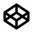

Nirvana - Nevermind
Recréez la pochette de l'album Nevermind du mythique groupe grunge Nirvana.
Pour cet exercice, vous devez écrire du CSS afin de recréer la pochette de l'album "Nevermind" du mythique groupe grunge Nirvana.
Aperçu du résultat 👇
Matériel
Dossier de départPolices d'écriture 🚓
Bodoni Poster Compressed Franklin Gothic HeavyCouleurs 🎨
Médias
Prenez le temps d'analyser le fichier HTML.
Il est INTERDIT de modifier le HTML.
Requis de base
0%
- Téléchargez les images et placez-les dans un dossier images.
- Téléchargez les fonts et placez-les dans un dossier fonts.
- Créez une variable pour chacune des couleurs pour utilisation ultérieure.
- La couleur de fond de la page doit être de couleur grise et avoir un dégradé vertical allant du bleu foncé au bleu pâle.
- Fusionnez les deux fonds en mode screen afin de donner au gradient un effet délavé.
- L'album doit avoir une dimension verticale et horizontale de 80% du plus petit côté de la fenêtre, avoir un dégradé allant du bleu pâle au bleu foncé et avoir un ombrage de 100px égal de tous les côtés de couleur noire semi-transparente.
- Utilisez
transformafin de positionner l'album au centre de la fenêtre. - Ajoutez l'image pool.webp à l'arrière-plan de sorte qu'il prenne tout l'espace disponible.
- Fusionnez les deux fonds en mode luminosity.
- Assurez-vous que rien ne dépasse de l'album.
Requis bébé
0%
- Le bébé (
.baby) doit avoir comme arrière-plan l'image baby.webp et doit prendre tout l'espace disponible. - Il doit avoir une largeur de 91.5%, une hauteur de 60% et être positionné à 3% de la gauche et 12% du haut.
- Créez une animation permettant au bébé de flotter verticalement de −3% à 3% de sa grosseur en 2 secondes.
- L'animation doit commencer lentement et ralentir en fin de parcours.
Requis dollar
0%
- Le dollar (
.dollar) doit avoir comme arrière-plan l'image dollar.webp, prendre tout l'espace disponible et être positionné dans le coin haut droit de l'élément. - Il doit mesurer 24.5% en largeur, 45.5% en hauteur et être positionné en haut à 10% de la droite.
- Ajoutez-lui un filtre drop-shadow noir semi-transparent de 0.7vmin de grosseur et disposé à −0.7vmin de la gauche et 0.7vmin du haut.
- Vous aurez remarqué dans le HTML qu'il y a un filtre SVG nommé water.
- Appliquez-le au dollar en ajoutant le filtre
url(#water). - Afin de corriger la distorsion du filtre water, ajoutez-lui une marge extérieure haut de −5px.
- Lors du survol du dollar, il doit grossir d'un facteur de 1.1 en l'espace de 0.2 seconde.
- À l'aide de la pseudo-classe
:has(), faites en sorte de mettre sur pause l'animation du bébé lors du survol du dollar.
Requis logo
0%
- Importez la police d'écriture BodoniPosterCompressed.otf, nommez-la Bodoni et appliquez-la au
h1. - Importez la police d'écriture FranklinGothicHeavy.otf, nommez-la Franklin et appliquez-la au
h2. - L'élément
.logodoit être positionné à 4% de la gauche et 4% du bas. - L'élément
.stripedoit mesurer 0.4vmin et être de couleur charcoal. - Les textes doivent être centrés horizontalement et être de couleur charcoal.
- Le nom du groupe doit avoir une grosseur de police d'écriture de 10vmin et une hauteur de ligne de 8.5vmin.
- Le titre de l'album doit avoir une grosseur de police d'écriture de 4.5vmin, une hauteur de ligne de 4.5vmin et un espacement de lettres de −0.05em.
- Pour lui donner un effet d'eau, ajoutez-lui le filtre
url(#water). - Afin de corriger la distorsion causée par le filtre, appliquez-lui une marge extérieure haut et gauche de −8px.
Requis bulle
0%
- L'élément
.bubble-wrapperdoit avoir une dimension de 2vmin par 2vmin et être positionné à 51% de la gauche et 27% du haut. - L'élément
.bubbledoit prendre tout l'espace disponible à l'intérieur de son parent, être de forme ronde et avoir une opacité de 50%. - Ajoutez-lui un ombrage intérieur blanc égal de tous les côtés d'une dimension de 1vmin avec une étendue de 0.5vmin.
- Afin de créer un effet de réflexion, utilisez le pseudo-élément
::after. - Ce nouvel élément doit avoir une dimension de 50% par 50%, être positionné à 10% du haut et 20% de la droite, être de forme ronde, avoir une rotation de 30deg, une déformation verticale de 0.7, avoir un flou de 0.1vmin et être de couleur blanche.
- Avant d'animer la bulle, initialisez sa grosseur en ajoutant un scale à 0 à l'élément
.bubble-wrapper. - Créez une animation nommée
bubble-risepermettant de s'échapper de la bouche du bébé. - L'animation doit s'exécuter ainsi :
- 0% : un scale de 0 et une translation verticale de 0
- 20% : un scale de 1 et une translation verticale de −1vmin
- 100% : un scale de 1 et une translation verticale de −30vmin
- À l'aide de la pseudo-classe
:has(), ajoutez cette animation à l'élément.bubble-wrapperlors du survol du dollar. - L'animation doit durer 3 secondes, commencer lentement, jouer de façon infinie et garder son apparence à la fin de l'animation.
- Créez une animation nommée
bubblepermettant à la bulle d'avoir un mouvement latéral. - Elle doit se déplacer horizontalement de −40% à 40%.
- À l'aide de la pseudo-classe
:has(), ajoutez cette animation à l'élément.bubblelors du survol du dollar. - L'animation doit durer 0.5 seconde, faire des allers-retours, jouer de façon infinie, commencer lentement et ralentir en fin de parcours.
Ambiance
Corrigé
Zip / Nirvana - Nevermind
Pen / Nirvana - Nevermind Démo / Nirvana - Nevermind